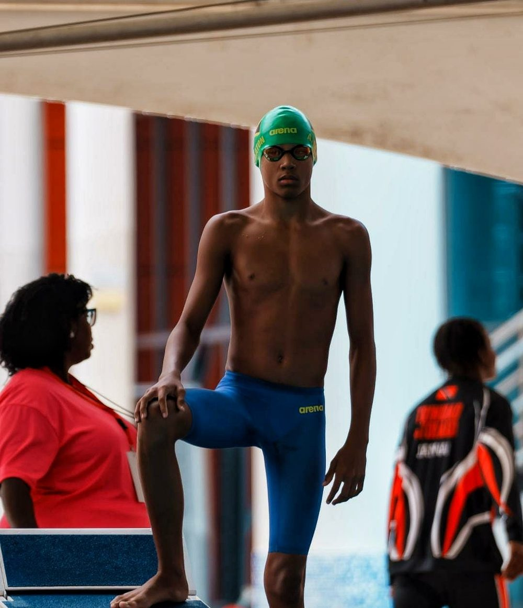
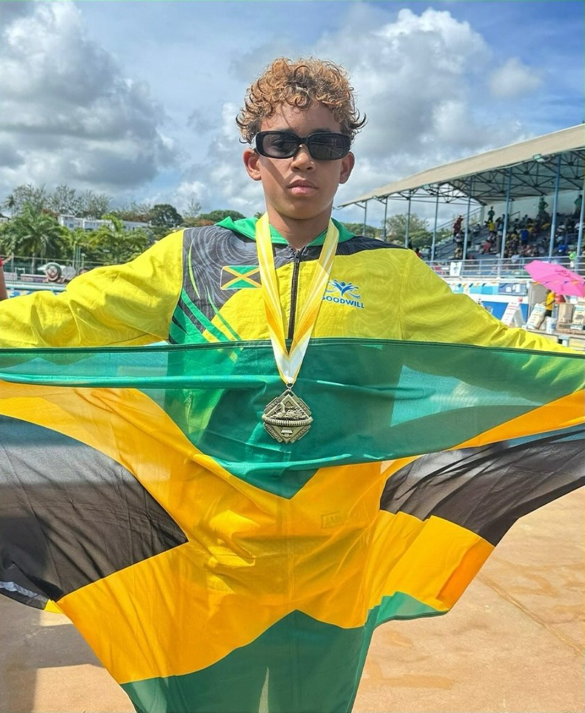
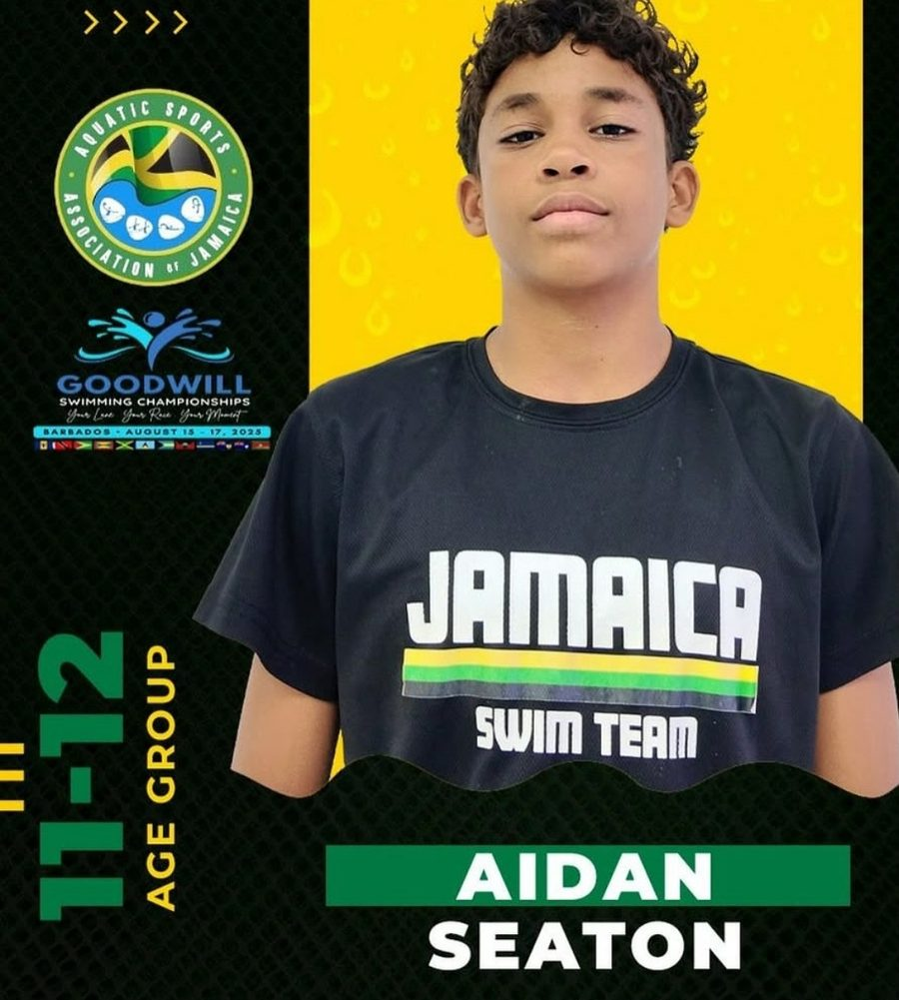
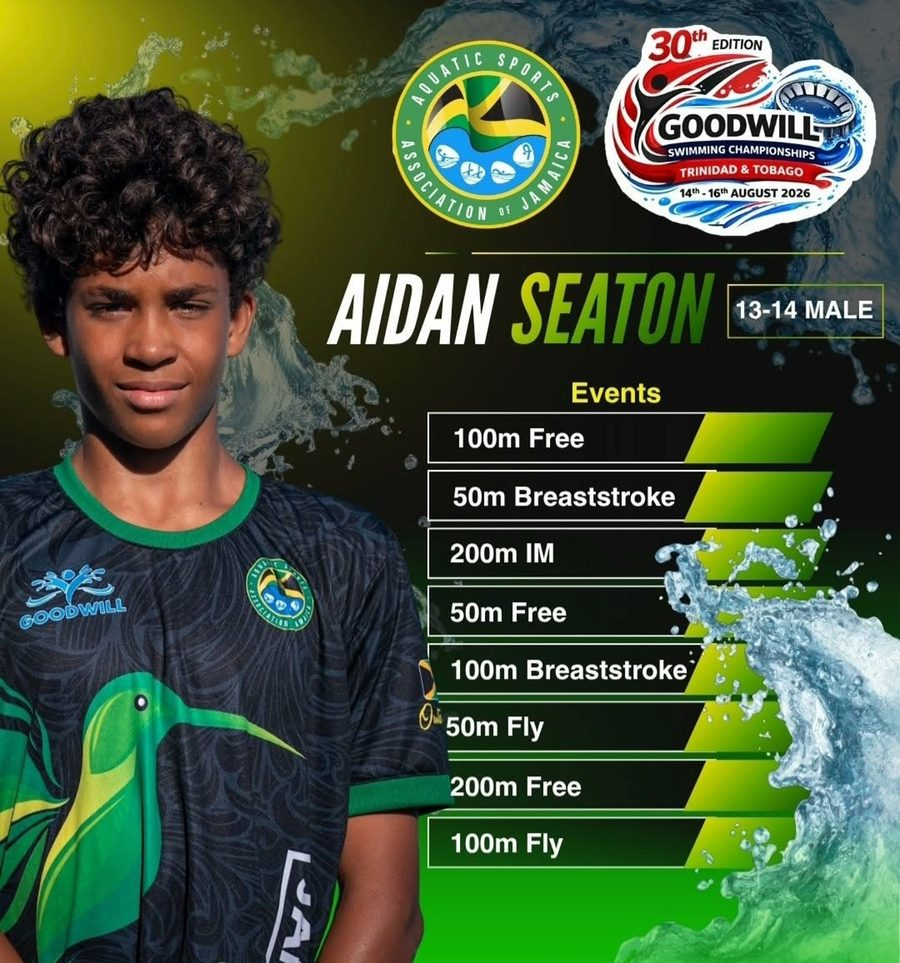

Competitive swimmer. Three-time national team representative. Goodwill gold medallist. Chasing CARIFTA 2027.

Aidan Seaton is a Jamaican competitive swimmer from Kingston who has worn the national colours at the Goodwill Swimming Championships three times: in 2023, 2025 and 2026.
A student at Campion College, Aidan trains and races with Tornadoes Swim Club, one of Jamaica's established age-group programmes. He competes in breaststroke, butterfly, freestyle and the individual medley, where versatility across strokes counts as much as raw speed.
His breakthrough came at the 2025 Goodwill Championships in Barbados (15–17 August), where he won gold in the 100m breaststroke and bronze in the 200m IM and 100m butterfly. That same year he swam on a Tornadoes relay that set a Jamaican national age-group record in the 11–12 mixed 400m medley relay.
In August 2026 he made his third Goodwill team, swimming eight events in the Boys 13–14 age group at the 30th edition in Trinidad & Tobago. Aidan's focus now is CARIFTA Aquatics 2027 in Trinidad & Tobago, the Caribbean's main age-group championship and the next step on his international path.

Three Goodwill Swimming Championships for Jamaica, and the next target already set.
First international selection for Jamaica, and first experience of racing regional rivals.
DebutBreakthrough meet in the 11–12 age group: gold in the 100m breaststroke, bronze in the 200m IM and 100m butterfly.
1 Gold 2 Bronze30th edition, 14–16 August. Third national team, his first in the 13–14 age group, entered in eight events.
3rd selectionTraining toward selection for CARIFTA Aquatics in March 2027.
The targetDocumented results from international competition and national age-group records.
Goodwill title, 11–12 age group
All four strokes in one race
Individual podium on the international stage
Tornadoes Swim Club · 2025. Aidan was part of the relay team that set a new national mark for the age group.
Current long-course bests from ASAJ results and national rankings, 2026.
| Event | Stroke | 2026 LCM |
|---|---|---|
| 100m FreestyleLong course | Free | 58.75 |
| 100m BreaststrokeLong course | Breast | 1:19.20 |
| 200m BreaststrokeLong course | Breast | 2:52.29 |
| 50m BreaststrokeLong course | Breast | 35.32 |
| 50m ButterflyLong course | Fly | 29.22 |
| 100m ButterflyLong course | Fly | 1:05.00 |
| 200m ButterflyLong course | Fly | 2:34.11 |
| 200m Individual MedleyLong course | IM | 2:31.06 |
| 400m Individual MedleyLong course | IM | 5:28.27 |
Source: ASAJ long-course results and rankings, 2026 (Dean Martin Memorial, Oct–Nov 2026; ASAJ Distance Meet, 10 Oct 2026). Meet names, dates and splits are available to coaches on request.
Racing since the 2017 prep and primary schools meet, and faster in his 50m Free every single season since.
Best long-course 50m Free in each season, 2017 to 2026. Source: SwimCloud, not ASAJ-verified.
Rank within the Tornadoes club for his age group each year, from SwimCloud. In 2026 he is also 36th nationally across all of Jamaica.
CARIFTA Aquatics is where the Caribbean's best age-group swimmers measure themselves against each other, and for many it is the first step toward senior international swimming. Making Jamaica's 2027 team is Aidan's main goal.
His preparation with Tornadoes builds on the events where he has already won internationally (breaststroke, butterfly and the IM), with freestyle now part of his programme too.
Team Jamaica moments from Goodwill 2025 and 2026.


Wear the flag.
Chase the clock.
For coaches, scouts and programme staff interested in Aidan's development, please get in touch through his family or club.